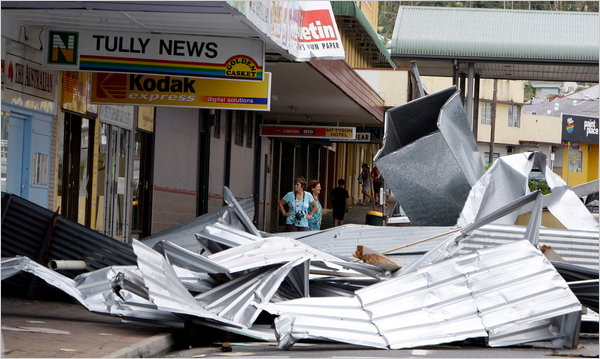

Gov. Andrew M. Cuomo’s new communications director is leaving her post after just four months to reunite with her former boss, Jeffrey Zucker, the new president of CNN Worldwide . The aide, Allison Gollust, informed Mr. Cuomo of her resignation on Friday, and will leave the governor’s office effective March 1. She will become the senior
Feb. 14, 2013 Midday New York Numbers — 360; Lucky Sum — 9 Midday New York Win 4 — 7036; Lucky Sum — 16 New York Numbers — 697; Lucky Sum — 22 New York Win 4 — 5835; Lucky Sum — 21 New York Take 5 — 2, 6, 14, 34, 37 New York Pick 10 — 2, 13, 14, 15, 20, 22, 23, 27, 30, 35, 36, 39, 43, 50,
In the wake of Hurricane Sandy , New Yorkers have harshly criticized their utilities, saying they are poorly prepared for big storms and respond too slowly to repair the damage. Gov. Andrew M. Cuomo has sympathized and has called for comprehensive changes , including dissolving the Long Island Power Authority and increasing the powers of the
